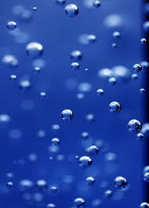

Experiment 2: Living Impressions
Description
This experiment I familiarized myself with P5js and how to make objects move.
I based my experiment off of the idea of bubbles floating in water.
Technical
I added a gradient in the background that is drawn with strokes that go for each row. The bubbles are a class that is instanced.
At first, a group of bubbles is instanced, then bubbles are randomly spawned thereafter.
Reflection
This was not too challenging, but I wanted to add additional functionalities that did not end up working.
P5js is an interesting tool. I had mistook its purpose.